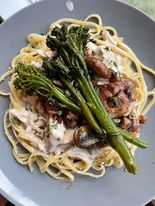
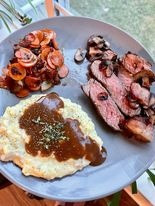

Transitioning from NET (Natural Environment Training) to .NET () About a 60/40 split: Indoor/Outdoor Person Staying inside, I enjoy crafting, cooking, gaming, binging shows, reading. Outdoors, tennis, hiking, checking out new parks, playing with our furry companions. Needless to say, I am easily a mused and fond of many things. In the past year, I have been developing my cooking skills. Below are some recent foods I have cooked:
 
Click on my Portfolio link to see SERIOUS BUSINESS
Portfolio